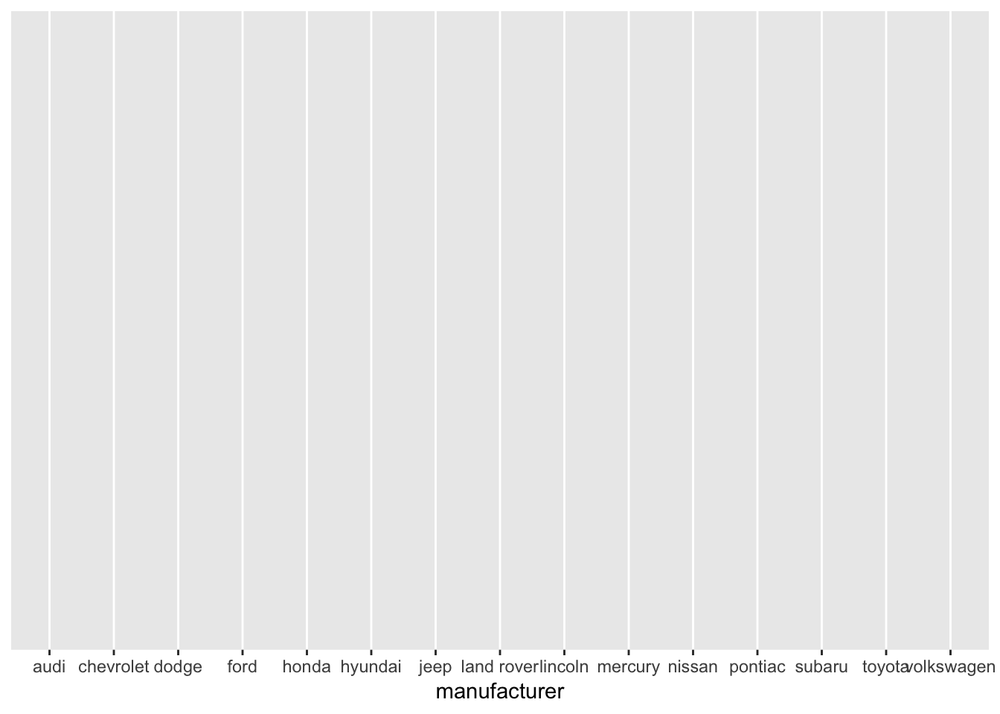
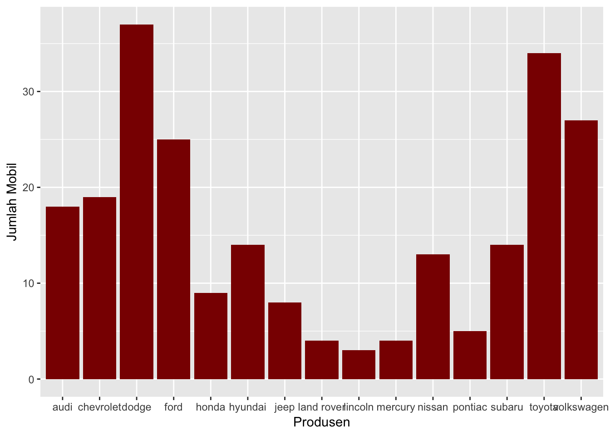
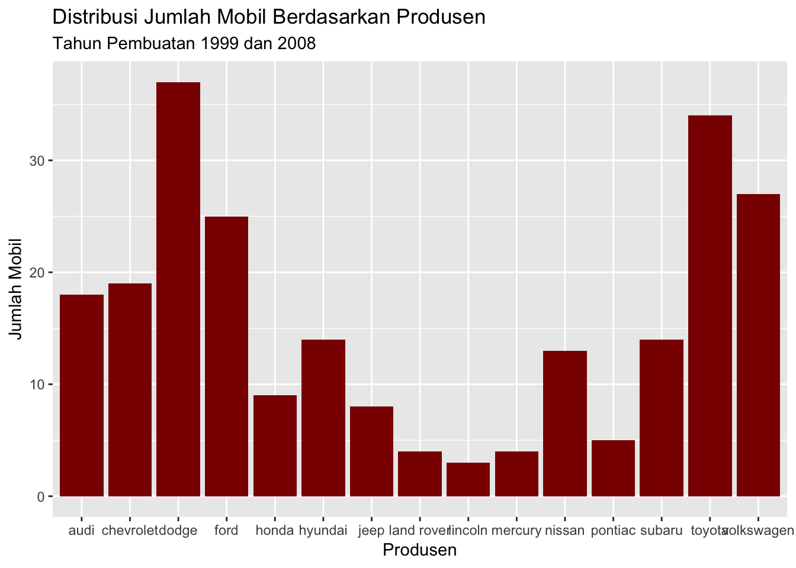
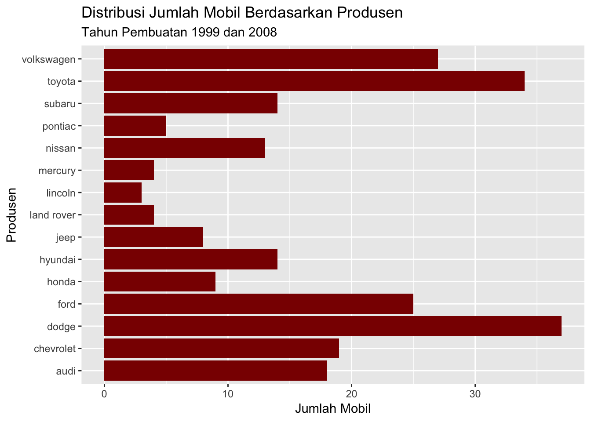
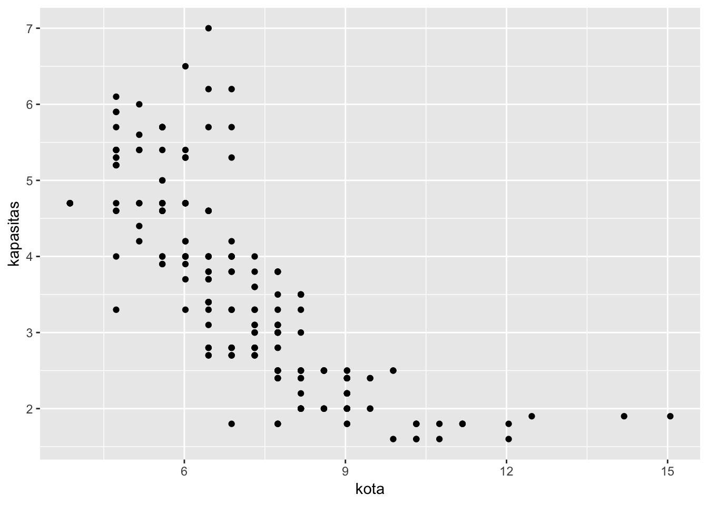
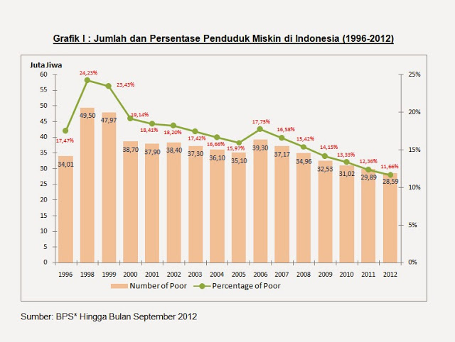
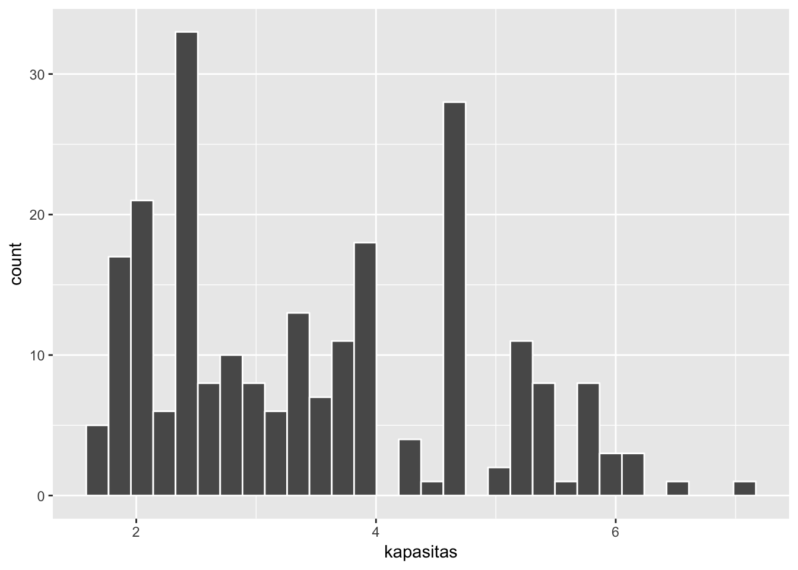
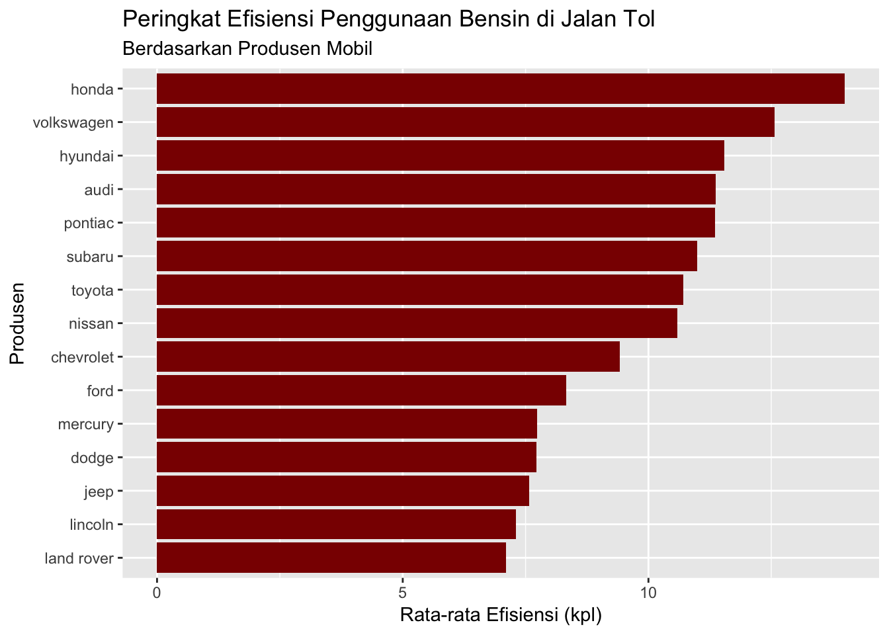

Langkah Kilat 2 Kuasai Teknik Dasar Analisis Data
Analisis data merupakan subjek yang cukup luas. Anda tidak bisa belajar semuanya sekaligus. Waktu Anda terbatas dan sangat berharga. Anda perlu strategi khusus untuk menguasainya. Investasi terbaik Anda adalah waktu dan pikiran. Anda harus fokus belajar satu keterampilan yang memiliki keuntungan atau balik modal investasi yang tinggi.
Kabar baiknya, Anda sudah melakukan hal ini: Belajar R.
R merupakan tool yang memiliki keuntungan atau balik modal investasi paling tinggi.
Jadi, lanjutkanlah belajar R.
Di bagian ini, Anda akan diarahkan untuk mengetahui sebenarnya apa saja yang menjadi bagian dari teknik dasar analisis data.
Teknik dasar analisis data dibagi menjadi 3:
- Visualisasi Data
- Manipulasi Data
- Interpretasi Data
Anda sebaiknya belajar teknik dasar analisis ini secara berurutan.
Pertama-tama pelajari visualisasi data.
Visualisasi data merupakan cara tercepat dan termudah untuk mendapatkan insight pada sebuah set data. Selain itu, keterampilan ini juga bisa dijadikan sebagai alat komunikasi ke siapa saja yang membutuhkan hasil analisis data.
2.1 Visualisasi Data
Untuk belajar visualisasi data, gunakan salah satu paket R, yakni ggplot2.
Huruf “gg” pada ggplot2 merupakan kepanjangan dari Grammar of Graphics, sebuah buku yang ditulis oleh Leland Wilkinson, prinsip yang ggplot2 ambil. Grammar of Graphics menjelaskan tentang metode membagi-bagi grafik ke berbagai elemen dan membangun setiap elemen tersebut di beberapa lapisan untuk menampilkan representasi visual.
Singkatnya, grafik di petakan dari data ke atribut estetik, seperti warna, bentuk, atau ukuran juga ke objek geometrik, seperti titik, garis, ataupun batang. Selain itu, grafik juga dipetakan ke sistem koordinat.
Sebuah grafik ggplot terdiri dari sebuah sistem koordinat dan setidaknya sebuah objek geometrik.
Lalu, Kenapa ggplot2?
ggplot2 mengajarkan Anda bagaimana berpikir tentang visualisasi data.
Anda diajarkan tidak hanya secara syntax saja, tetapi juga berpikir dan memiliki konsep terkait proses memvisualisasi data.
3 Prinsip Dasar Visualisasi Menggunakan ggplot2
- Pemetaan Data ke Atribut Estetik
- Lapisan
- Iterasi Pemetaan dan Lapisan
OK, sampai sini, mungkin Anda masih bingung, tidak apa. Ada baiknya konsep ini langsung dijelaskan melalui contoh saja.
2.1.1 Pemetaan Data ke Atribut Estetik
Pada contoh kali ini, Anda akan diarahkan untuk membuat grafik batang atau barchart. Grafik ini merupakan grafik yang paling sering dipakai dan paling mudah dibaca. Selain itu, akan lebih memudahkan Anda untuk memahami prinsip dan filosofi membuat grafik menggunakan ggplot2.
Sebenarnya ada banyak grafik jenis lainnya seperti histogram, grafik garis (line chart), grafik sebar (scatter plot), dan grafik lainnya. Pembahasan di bagian ini akan difokuskan pada grafik batang saja.
Cukup penjelasannya, coba langsung Anda inisiasi paket ggplot2 menggunakan fungsi library().
# Inisiasi paket ggplot
library(ggplot2)Setiap Anda ingin menggunakan paket R yang cukup spesifik, Anda harus menginisasi paket tersebut di awal. Hal ini dilakukan agar Anda bisa mengakses seluruh fungsi yang ada di paket tersebut.
Anda akan menggunakan data built in dari ggplot2, yakni mpg. Untuk melihat data mpg, ketik mpg di CONSOLE dan tekan Enter.
mpg## # A tibble: 234 x 11
## manufacturer model displ year cyl trans drv cty hwy fl cla…
## <chr> <chr> <dbl> <int> <int> <chr> <chr> <int> <int> <chr> <ch>
## 1 audi a4 1.8 1999 4 auto… f 18 29 p com…
## 2 audi a4 1.8 1999 4 manu… f 21 29 p com…
## 3 audi a4 2 2008 4 manu… f 20 31 p com…
## 4 audi a4 2 2008 4 auto… f 21 30 p com…
## 5 audi a4 2.8 1999 6 auto… f 16 26 p com…
## 6 audi a4 2.8 1999 6 manu… f 18 26 p com…
## 7 audi a4 3.1 2008 6 auto… f 18 27 p com…
## 8 audi a4 q… 1.8 1999 4 manu… 4 18 26 p com…
## 9 audi a4 q… 1.8 1999 4 auto… 4 16 25 p com…
## 10 audi a4 q… 2 2008 4 manu… 4 20 28 p com…
## # ... with 224 more rowsSeperti yang Anda lihat, mpg, yang merupakan kepanjangan dari miles per gallon adalah sebuah set data tentang efisiensi penggunaan bensin 38 mobil terpopuler di Amerika Serikat.
Anda bisa memahami lebih lanjut terkait detail set data ini melalui perintah ?mpg.
Untuk melihat berapa jumlah baris dan kolomnya, Anda bisa menggunakan fungsi dim.
dim(mpg)## [1] 234 11Set data ini memiliki 234 baris dan 11 kolom atau 234 observasi dan 11 variabel. Jika Anda lihat data ini lebih teliti lagi, 234 juga merupakan jumlah total keseluruhan mobil yang menjadi objek observasi.
Sebelum melangkah lebih jauh ke teknis pembuatan grafik, Anda akan diarahkan untuk mengetahui perbandingan jumlah mobil antar ‘manufacturer’ sebagai tujuan dari proses ini.
OK, untuk mulai memetakan variabel ke grafik, gunakan fungsi ggplot().
# Pemetaan variabel `manufacturer` ke sistem koordinat x
ggplot(data = mpg, aes(x = manufacturer))
Fungsi aes() di atas adalah memetakan atribut variabel ‘manufacturer’ ke sistem koordinat x. Anda bisa lihat, di garis horizontal x sudah ada nama-nama pembuat mobil yang merupakan hasil pemetaan atribut estetik.
Sampai sini Anda pasti berpikir,
“Kenapa kok jelek banget grafiknya?”
“Mana grafik batangnya?”
“Tulisannya tumpang tindih, nggak beraturan.”
Tenang, grafik tersebut masih tahap lapisan pertama dan iterasi pertama juga prosesnya masih langkah demi langkah sehingga Anda tidak bingung dan lebih mudah mengerti konsep membuat grafik ggplot2.
2.1.2 Lapisan
Lapisan atau layer merupakan prinsip dasar visualisasi kedua menggunakan ggplot2. Filosofinya adalah Anda membuat grafik yang terdiri dari beberapa lapisan sehingga hasilnya merepresentasikan visualisasi yang Anda inginkan. Lapisan ini bisa berupa sistem koordinat, grafik batang, judul grafik, legenda, ataupun elemen lainnya.
Langkah selanjutnya setelah pemetaan variabel, Anda akan menambahkan elemen grafik batang pada lapisan berikutnya dengan menggunakan operator + dan fungsi geom_bar().
# Penambahan elemen grafik batang pada lapisan kedua
ggplot(data = mpg, aes(x = manufacturer)) +
geom_bar()
Nah, sudah mulai terlihat grafiknya.
Sampai sini, sudah ada 2 lapisan grafik. Lapisan pertama diisi oleh elemen sistem koordinat, lapisan kedua diisi oleh grafik batang.
2.1.3 Iterasi Pemetaan dan Lapisan
Prinsip dasar ketiga ini merupakan perulangan dari prinsip satu dan prinsip kedua. Anda terus melakukan iterasi dan modifikasi atribut estetik serta penambahan lapisan atau elemen sehingga sesuai dengan representasi visual yang ingin Anda capai.
Untuk mempermudah pemahaman, Anda akan diarahkan langsung melalui contoh penulisan kode yang disertai dengan penjelasan dari baris komentar (baris komentar diawali dengan tanda #).
# Merubah warna grafik batang menjadi merah gelap
# dengan menggunakan argumen "fill" pada fungsi geom_bar()
ggplot(data = mpg, aes(x = manufacturer)) +
geom_bar(fill = "#8B0000")# Merubah label keterangan sistem koordinat x dan y
# dengan menggunakan fungsi labs()
ggplot(data = mpg, aes(x = manufacturer)) +
geom_bar(fill = "#8B0000") +
labs(x = "Produsen", y = "Jumlah Mobil")
# Menambah judul dan subjudul
# dengan menggunakan fungsi ggtitle()
ggplot(data = mpg, aes(x = manufacturer)) +
geom_bar(fill = "#8B0000") +
labs(x = "Produsen", y = "Jumlah Mobil") +
ggtitle("Distribusi Jumlah Mobil Berdasarkan Produsen",
subtitle = "Tahun Pembuatan 1999 dan 2008")
Begitulah bagaimana iterasi dilakukan terus menerus sehingga representasi grafik sesuai dengan yang Anda inginkan.
Dan pada akhirnya, iterasi final, menukar sistem koordinat sehingga tulisan terlihat lebih rapih dan mudah dibaca.
# Menukar sistem koordinat sehingga lebih mudah dibaca
# menggunakan fungsi coord_flip()
ggplot(data = mpg, aes(x = manufacturer)) +
geom_bar(fill = "#8B0000") +
labs(x = "Produsen", y = "Jumlah Mobil") +
ggtitle("Distribusi Jumlah Mobil Berdasarkan Produsen",
subtitle = "Tahun Pembuatan 1999 dan 2008") +
coord_flip()
Sekali Anda mengerti tentang prinsip dasar ini, pemahaman Anda terhadap data visualisasi akan berubah. Mungkin bagi Anda yang dulu terbiasa menggunakan grafik dari Excel akan memerlukan waktu lebih untuk menangkap ini semua. Bagaimana tidak, Excel memberikan kemudahan yang membuat Anda tidak perlu memikirkan proses bagaimana grafik dibuat. Anda hanya cukup point, drag, and click, sedikit konfigurasi, Excel akan membereskan semuanya.
Pelajari ggplot2, Anda akan paham bagaimana proses grafik dibuat tahap demi tahap. Memang membutuhkan effort lebih, tetapi worth it. Seiring Anda mengerti cara menggunakan ggplot2, pemahaman prinsip visualisasi data Anda akan meningkat.
2.2 Manipulasi Data
Manipulasi data berperan ketika representasi visualisasi yang Anda buat tidak cukup untuk memunculkan insight. Faktanya, data yang Anda peroleh hampir pasti perlu diolah terlebih dahulu. Menurut penelitian, seorang analis data kebanyakan mengerahkan usahanya berkutat di fase manipulasi atau mengolah data ini sekitar 60% - 70% dari keseluruhan proses analisis. Jadi bisa dikatakan, keterampilan manipulasi data cukup penting dan pastinya juga perlu Anda kuasai.
Manipulasi data adalah segala proses yang dilakukan pada sebuah set data dengan tujuan mempermudah melakukan analisis data dan mendapatkan insight. Proses tersebut diantaranya mengubah nama kolom atau variabel, mengurutkan, menyaring, sampai dengan meringkas data.
Konsep atau teknik manipulasi data yang akan dikupas diantaranya sebagai berikut:
- Melihat dan Mengetahui Set Data
- Mengubah Variabel, Kolom, Isi Data
- Operator Pipa (
%>%) - Memilih Variabel Data
- Menyaring Baris Data
- Mengurutkan Data
- Mengelompokkan Data
- Meringkas Data
Pada bahasan kali ini, Anda akan diarahkan untuk menggunakan kembali set data mpg seperti sebelumnya ditambah satu paket manipulasi data yang sangat powerful, dplyr.
Pertama-tama, inisiasi paket dplyr.
# Inisiasi paket dplyr
library(dplyr)2.2.1 Melihat dan Mengetahui Set Data
Setiap Anda mendapatkan sebuah data set untuk diolah, hal yang pertama harus Anda lakukan adalah mengetahui isi dan tentang apa data tersebut. Apa format datanya? Berapa dimensinya? Apa saja variabelnya? Bagaimana tipe variabelnya? Apakah ada data yang hilang atau tidak terisi? Dan lain sebagainya.
Yang pertama adalah fungsi class() untuk menampilkan tipe data.
# Menampilkan tipe data
class(mpg)## [1] "tbl_df" "tbl" "data.frame"Apa itu “tbl_df” “tbl”?
“tbl_df” = table data frame
“tbl” = table
Intinya, “tbl_df” “tbl” “data.frame” merupakan tipe data dari mpg yang berupa tabel atau data frame. Tabel atau data frame adalah tipe data berbentuk “kotak” yang terdiri dari baris dan kolom.
Data yang mudah diolah atau dimanipulasi biasanya bertipe tabel atau data frame ini. Selain tabel, ada juga yang berbentuk vektor atau yang hanya terdiri dari satu baris saja atau satu kolom saja.
Lalu, bagaimana cara mengetahui jumlah baris dan kolom data mpg? Ya, Anda benar, salah satunya menggunakan fungsi dim().
Anda juga bisa menggunakan fungsi nrow() dan ncol().
# Menampilkan jumlah baris
nrow(mpg)## [1] 234# Menampilkan jumlah kolom atau variabel
ncol(mpg)## [1] 11Dari fungsi di atas, Anda sudah mengetahui jumlah kolom atau variabel. Selanjutnya, Anda gali lebih jauh untuk mengetahui nama-nama kolom atau variabelnya. Fungsi names() bisa membantu Anda.
# Menampilkan seluruh variabel atau nama kolom
names(mpg)## [1] "manufacturer" "model" "displ" "year"
## [5] "cyl" "trans" "drv" "cty"
## [9] "hwy" "fl" "class"Anda sudah tahu variabel dari set data mpg, akan lebih lengkap lagi jika Anda tahu isi di dalamnya. Gunakan fungsi head() dan tail() untuk mengintip isi bagian awal dan akhir dari sebuah set data.
# Menampilkan 7 baris awal dari data
head(mpg, 7)## # A tibble: 7 x 11
## manufacturer model displ year cyl trans drv cty hwy fl class
## <chr> <chr> <dbl> <int> <int> <chr> <chr> <int> <int> <chr> <chr>
## 1 audi a4 1.8 1999 4 auto… f 18 29 p comp…
## 2 audi a4 1.8 1999 4 manu… f 21 29 p comp…
## 3 audi a4 2 2008 4 manu… f 20 31 p comp…
## 4 audi a4 2 2008 4 auto… f 21 30 p comp…
## 5 audi a4 2.8 1999 6 auto… f 16 26 p comp…
## 6 audi a4 2.8 1999 6 manu… f 18 26 p comp…
## 7 audi a4 3.1 2008 6 auto… f 18 27 p comp…# Menampilkan 8 baris akhir dari data
tail(mpg, 8)## # A tibble: 8 x 11
## manufacturer model displ year cyl trans drv cty hwy fl class
## <chr> <chr> <dbl> <int> <int> <chr> <chr> <int> <int> <chr> <chr>
## 1 volkswagen new … 2.5 2008 5 auto… f 20 29 r subc…
## 2 volkswagen pass… 1.8 1999 4 manu… f 21 29 p mids…
## 3 volkswagen pass… 1.8 1999 4 auto… f 18 29 p mids…
## 4 volkswagen pass… 2 2008 4 auto… f 19 28 p mids…
## 5 volkswagen pass… 2 2008 4 manu… f 21 29 p mids…
## 6 volkswagen pass… 2.8 1999 6 auto… f 16 26 p mids…
## 7 volkswagen pass… 2.8 1999 6 manu… f 18 26 p mids…
## 8 volkswagen pass… 3.6 2008 6 auto… f 17 26 p mids…Selain head() dan tail(), untuk melihat isi data berformat spreadsheet, Anda bisa menggunakan fungsi View().
# Menampilkan isi data berformat spreadsheet
View(mpg)Hasilnya akan muncul di bagian jendela SCRIPT RStudio.
RINGKASAN DATA
Anda sudah mengetahui beberapa cara melihat dan menggali informasi dari sebuah set data. Ada satu cara untuk menampilkan ringkasan umum sehingga Anda bisa langsung melihat dan menangkap isi data secara big picture.
# Menampilkan ringkasan umum dari data
summary(mpg)## manufacturer model displ year
## Length:234 Length:234 Min. :1.600 Min. :1999
## Class :character Class :character 1st Qu.:2.400 1st Qu.:1999
## Mode :character Mode :character Median :3.300 Median :2004
## Mean :3.472 Mean :2004
## 3rd Qu.:4.600 3rd Qu.:2008
## Max. :7.000 Max. :2008
## cyl trans drv cty
## Min. :4.000 Length:234 Length:234 Min. : 9.00
## 1st Qu.:4.000 Class :character Class :character 1st Qu.:14.00
## Median :6.000 Mode :character Mode :character Median :17.00
## Mean :5.889 Mean :16.86
## 3rd Qu.:8.000 3rd Qu.:19.00
## Max. :8.000 Max. :35.00
## hwy fl class
## Min. :12.00 Length:234 Length:234
## 1st Qu.:18.00 Class :character Class :character
## Median :24.00 Mode :character Mode :character
## Mean :23.44
## 3rd Qu.:27.00
## Max. :44.00Fungsi summary() memberikan Anda ringkasan umum dari sebuah set data. Jika variabelnya bertipe numerik, akan ditampilkan ringkasan seperti nilai minimal, maksimal, rata-rata, median, kuartil pertama, dan kuartil ketiga.
Selain fungsi summary(), ada fungsi lain yang lebih ringkas, yaitu str() dan glimpse().
# Menampilkan struktur dan isi data
str(mpg)## Classes 'tbl_df', 'tbl' and 'data.frame': 234 obs. of 11 variables:
## $ manufacturer: chr "audi" "audi" "audi" "audi" ...
## $ model : chr "a4" "a4" "a4" "a4" ...
## $ displ : num 1.8 1.8 2 2 2.8 2.8 3.1 1.8 1.8 2 ...
## $ year : int 1999 1999 2008 2008 1999 1999 2008 1999 1999 2008 ...
## $ cyl : int 4 4 4 4 6 6 6 4 4 4 ...
## $ trans : chr "auto(l5)" "manual(m5)" "manual(m6)" "auto(av)" ...
## $ drv : chr "f" "f" "f" "f" ...
## $ cty : int 18 21 20 21 16 18 18 18 16 20 ...
## $ hwy : int 29 29 31 30 26 26 27 26 25 28 ...
## $ fl : chr "p" "p" "p" "p" ...
## $ class : chr "compact" "compact" "compact" "compact" ...# Menampilkan struktur dan isi data
dplyr::glimpse(mpg)## Observations: 234
## Variables: 11
## $ manufacturer <chr> "audi", "audi", "audi", "audi", "audi", "audi", "...
## $ model <chr> "a4", "a4", "a4", "a4", "a4", "a4", "a4", "a4 qua...
## $ displ <dbl> 1.8, 1.8, 2.0, 2.0, 2.8, 2.8, 3.1, 1.8, 1.8, 2.0,...
## $ year <int> 1999, 1999, 2008, 2008, 1999, 1999, 2008, 1999, 1...
## $ cyl <int> 4, 4, 4, 4, 6, 6, 6, 4, 4, 4, 4, 6, 6, 6, 6, 6, 6...
## $ trans <chr> "auto(l5)", "manual(m5)", "manual(m6)", "auto(av)...
## $ drv <chr> "f", "f", "f", "f", "f", "f", "f", "4", "4", "4",...
## $ cty <int> 18, 21, 20, 21, 16, 18, 18, 18, 16, 20, 19, 15, 1...
## $ hwy <int> 29, 29, 31, 30, 26, 26, 27, 26, 25, 28, 27, 25, 2...
## $ fl <chr> "p", "p", "p", "p", "p", "p", "p", "p", "p", "p",...
## $ class <chr> "compact", "compact", "compact", "compact", "comp...Seperti yang Anda lihat, fungsi glimpse() sepertinya lebih rapih dalam tampilan.
Kedua fungsi ini menampilkan cukup informasi dalam sebuah tampilan yang padat dan jelas mulai dari berapa jumlah variabel, jumlah observasi, nama variabel, tipe variabel, sampai dengan isi dari sebagian data.
Ketika Anda mendapatkan sebuah set data untuk diolah, tentu fungsi ini tidak akan Anda lewatkan begitu saja.
Yang perlu Anda cermati, set data mpg ini tipe variabelnya masih kurang tepat. Misalnya, variabel year atau tahun pembuatan mobil. Di data hanya ada tahun 1999 dan 2008 saja. Seharusnya ini termasuk ke dalam tipe variabel faktor atau kategorikal, bukan numerik.
Di bagian berikutnya, akan dibahas bagaimana cara mengubah variabel.
2.2.2 Mengubah Variabel, Kolom, Isi Data
Sebelum melangkah lebih jauh, Anda harus mengetahui beberapa tipe variabel di pemrograman R.
TIPE VARIABEL
Yang sering digunakan ada 6 tipe:
- Karakter: Huruf, kata, atau kalimat seperti
b,apel,mantap jiwa. - Integer: Bilangan bulat, contoh
1,4,7. - Double: Bilangan tidak bulat atau real, contoh
2.3,3.5. - Logikal: Benar atau salah (
TRUE/FALSE). - Kompleks:
2+4i, angka kompleks gabungan real dan imaginer. - Faktor: Kategorikal, seperti
laki-laki,perempuan(jenis kelamin).
Jika Anda lihat kembali set data mpg menggunakan str() atau glimpse(), maka tipe masing-masing variabelnya sebagai berikut:
- manufacturer: karakter
- model: karakter
- displ: double
- year: integer
- cyl: integer
- trans: karakter
- drv: karakter
- cty: integer
- hwy: integer
- fl: karakter
- class: karakter
Beberapa tipe variabel di atas ada yang tidak sesuai sehingga perlu diubah. Agar Anda lebih mengerti dan lebih jelas tentang variabel dan isinya serta tipe variabel yang seharusnya digunakan, maka coba Anda simak tabel berikut.
| Variabel | Penjelasan | Tipe Variabel | Revisi Tipe Variabel |
|---|---|---|---|
| manufacturer | Produsen pembuat mobil | karakter | faktor |
| model | Nama model mobil | karakter | karakter |
| displ | Engine displacement atau kapasitas mesin dalam liter | double | double |
| year | Tahun pembuatan mobil | integer | faktor |
| cyl | Jumlah silinder mesin | integer | faktor |
| trans | Tipe transmisi, auto atau manual | karakter | faktor |
| drv | Roda penggerak, f = roda depan, r = roda belakang, 4 = 4 roda | karakter | faktor |
| cty | Konsumsi bensin dalam kota (mil per galon) | integer | integer |
| hwy | Konsumsi bensin di jalan tol (mil per galon) | integer | integer |
| fl | Jenis bensin, e = ethanol, d = diesel, r = reguler, p = premium, c = natural gas | karakter | faktor |
| class | Tipe atau kelas mobil | karakter | faktor |
Beberapa variabel seperti manufacturer, year, cyl, trans, drv, fl, dan class merupakan tipe variabel berupa kategori sehingga perlu diubah menjadi tipe faktor. Di set data original, variabel-variabel tersebut dikenali sebagai tipe karakter atau integer.
MENGAKSES VARIABEL ATAU KOLOM DALAM SET DATA
Untuk mengubah variabel, Anda harus tahu cara mengakses salah satu variabel atau kolom beserta isi dari sebuah set data. Operator yang sering digunakan untuk mengakses variabel atau kolom adalah $. Ketik nama set data diikuti operator $ lalu nama variabel atau kolom. Semua diketik tanpa spasi.
# Mengakses variabel atau kolom drv
mpg$drv## [1] "f" "f" "f" "f" "f" "f" "f" "4" "4" "4" "4" "4" "4" "4" "4" "4" "4"
## [18] "4" "r" "r" "r" "r" "r" "r" "r" "r" "r" "r" "4" "4" "4" "4" "f" "f"
## [35] "f" "f" "f" "f" "f" "f" "f" "f" "f" "f" "f" "f" "f" "f" "4" "4" "4"
## [52] "4" "4" "4" "4" "4" "4" "4" "4" "4" "4" "4" "4" "4" "4" "4" "4" "4"
## [69] "4" "4" "4" "4" "4" "4" "r" "r" "r" "4" "4" "4" "4" "4" "4" "4" "4"
## [86] "4" "4" "4" "4" "4" "r" "r" "r" "r" "r" "r" "r" "r" "r" "f" "f" "f"
## [103] "f" "f" "f" "f" "f" "f" "f" "f" "f" "f" "f" "f" "f" "f" "f" "f" "f"
## [120] "f" "f" "f" "4" "4" "4" "4" "4" "4" "4" "4" "4" "4" "4" "4" "r" "r"
## [137] "r" "4" "4" "4" "4" "f" "f" "f" "f" "f" "f" "f" "f" "f" "4" "4" "4"
## [154] "4" "f" "f" "f" "f" "f" "4" "4" "4" "4" "4" "4" "4" "4" "4" "4" "4"
## [171] "4" "4" "4" "4" "4" "4" "4" "4" "4" "f" "f" "f" "f" "f" "f" "f" "f"
## [188] "f" "f" "f" "f" "f" "f" "f" "f" "f" "f" "f" "4" "4" "4" "4" "4" "4"
## [205] "4" "4" "4" "f" "f" "f" "f" "f" "f" "f" "f" "f" "f" "f" "f" "f" "f"
## [222] "f" "f" "f" "f" "f" "f" "f" "f" "f" "f" "f" "f" "f"Seluruh 234 isi dari variabel drv ditampilkan. Anda juga bisa mencoba variabel yang lainnya dengan cara yang sama.
MENGUBAH TIPE VARIABEL
Sebelum melakukan manipulasi data, pertama-tama pastikan Anda menyalin set data asli ke set data yang baru.
# Menyalin set data mpg ke set data baru bernama df.mobil
# df merupakan singkatan dari data frame
df.mobil <- mpgMulai sekarang dan selanjutnya, segala manipulasi data dilakukan di set data df.mobil.
Untuk mengubah tipe variabel ke tipe faktor atau kategorikal digunakan fungsi as.factor(). Fungsi pengubah tipe variabel lainnya:
as.character()mengubah ke tipe karakteras.integer()mengubah ke tipe integeras.double()mengubah ke tipe doubleas.logical()mengubah ke tipe logikalas.complex()mengubah ke tipe kompleks
# Mengubah tipe variabel manufacturer, year, cyl, trans, drv, fl, dan class
# ke tipe faktor
df.mobil$manufacturer <- as.factor(df.mobil$manufacturer)
df.mobil$year <- as.factor(df.mobil$year)
df.mobil$cyl <- as.factor(df.mobil$cyl)
df.mobil$trans <- as.factor(df.mobil$trans)
df.mobil$drv <- as.factor(df.mobil$drv)
df.mobil$fl <- as.factor(df.mobil$fl)
df.mobil$class <- as.factor(df.mobil$class)Hasilnya bisa dicek melalui fungsi str() atau glimpse.
# Menampilkan struktur set data df.mobil
str(df.mobil)## Classes 'tbl_df', 'tbl' and 'data.frame': 234 obs. of 11 variables:
## $ manufacturer: Factor w/ 15 levels "audi","chevrolet",..: 1 1 1 1 1 1 1 1 1 1 ...
## $ model : chr "a4" "a4" "a4" "a4" ...
## $ displ : num 1.8 1.8 2 2 2.8 2.8 3.1 1.8 1.8 2 ...
## $ year : Factor w/ 2 levels "1999","2008": 1 1 2 2 1 1 2 1 1 2 ...
## $ cyl : Factor w/ 4 levels "4","5","6","8": 1 1 1 1 3 3 3 1 1 1 ...
## $ trans : Factor w/ 10 levels "auto(av)","auto(l3)",..: 4 9 10 1 4 9 1 9 4 10 ...
## $ drv : Factor w/ 3 levels "4","f","r": 2 2 2 2 2 2 2 1 1 1 ...
## $ cty : int 18 21 20 21 16 18 18 18 16 20 ...
## $ hwy : int 29 29 31 30 26 26 27 26 25 28 ...
## $ fl : Factor w/ 5 levels "c","d","e","p",..: 4 4 4 4 4 4 4 4 4 4 ...
## $ class : Factor w/ 7 levels "2seater","compact",..: 2 2 2 2 2 2 2 2 2 2 ...Variabel-variabel terkait yang sebelumnya bertipe integer atau karakter telah diubah menjadi faktor.
Perubahan lain yang bisa dilihat melalui fungsi summary().
# Menampilkan ringkasan umum dari set data df.mobil
summary(df.mobil)## manufacturer model displ year cyl
## dodge :37 Length:234 Min. :1.600 1999:117 4:81
## toyota :34 Class :character 1st Qu.:2.400 2008:117 5: 4
## volkswagen:27 Mode :character Median :3.300 6:79
## ford :25 Mean :3.472 8:70
## chevrolet :19 3rd Qu.:4.600
## audi :18 Max. :7.000
## (Other) :74
## trans drv cty hwy fl
## auto(l4) :83 4:103 Min. : 9.00 Min. :12.00 c: 1
## manual(m5):58 f:106 1st Qu.:14.00 1st Qu.:18.00 d: 5
## auto(l5) :39 r: 25 Median :17.00 Median :24.00 e: 8
## manual(m6):19 Mean :16.86 Mean :23.44 p: 52
## auto(s6) :16 3rd Qu.:19.00 3rd Qu.:27.00 r:168
## auto(l6) : 6 Max. :35.00 Max. :44.00
## (Other) :13
## class
## 2seater : 5
## compact :47
## midsize :41
## minivan :11
## pickup :33
## subcompact:35
## suv :62Dengan mengubah tipe variabel menjadi faktor, kategori pada masing-masing variabel akan terlihat dan dihitung frekuensinya. Tampilan ini memudahkan Anda untuk mengetahui bahwa produsen dodge dan toyota memiliki oberservasi terbanyak dibandingkan produsen mobil lainnya.
Bandingkan dengan hasil ringkasan set data aslinya yang kurang informatif:
# Menampilkan ringkasan umum dari set data df.mobil
summary(mpg)## manufacturer model displ year
## Length:234 Length:234 Min. :1.600 Min. :1999
## Class :character Class :character 1st Qu.:2.400 1st Qu.:1999
## Mode :character Mode :character Median :3.300 Median :2004
## Mean :3.472 Mean :2004
## 3rd Qu.:4.600 3rd Qu.:2008
## Max. :7.000 Max. :2008
## cyl trans drv cty
## Min. :4.000 Length:234 Length:234 Min. : 9.00
## 1st Qu.:4.000 Class :character Class :character 1st Qu.:14.00
## Median :6.000 Mode :character Mode :character Median :17.00
## Mean :5.889 Mean :16.86
## 3rd Qu.:8.000 3rd Qu.:19.00
## Max. :8.000 Max. :35.00
## hwy fl class
## Min. :12.00 Length:234 Length:234
## 1st Qu.:18.00 Class :character Class :character
## Median :24.00 Mode :character Mode :character
## Mean :23.44
## 3rd Qu.:27.00
## Max. :44.00MENGUBAH NAMA VARIABEL
Nama variabel set data mpg menggunakan singkatan yang pendek dan berbahasa Inggris. Untuk memudahkan pemahaman, nama variabel tersebut akan diganti ke bahasa Indonesia serta tanpa singkatan.
# Menampilkan nama variabel set data df.mobil
names(df.mobil)## [1] "manufacturer" "model" "displ" "year"
## [5] "cyl" "trans" "drv" "cty"
## [9] "hwy" "fl" "class"Perhatikan urutan dari output di atas. Urutan nama variabel dimulai dari baris paling atas kiri ke kanan, lalu baris kedua mulai kiri ke kanan dan seterusnya. Angka di dalam kurung kotak [] adalah alat bantu untuk mempermudah identifikasi nomor urut variabel. Contohnya [7] adalah nomor urut variabel ‘drv’, sebelah kanannya, ‘cty’ sudah tentu nomor delapan dan seterusnya.
Mengubah nama variabel bisa dilakukan satu per satu atau sekaligus.
Berikut cara untuk mengubah salah satu nama variabel pada sebuah set data.
# Mengubah nama variabel displ menjadi kapasitas
names(df.mobil)[3] <- "kapasitas"Penjelasan dari kode di atas adalah mengubah nama variabel yang merupakan elemen vektor ketiga set data df.mobil menjadi “kapasitas”.
Yang perlu Anda identifikasi adalah nomor urut ke berapa variabel yang akan diubah. Variabel ‘displ’ urutan ketiga. Dengan menggunakan prinsip elemen vektor, maka digunakan [3] sebagai akses elemen dengan urutan yang ketiga.
Pastikan bahwa nama variabel ‘displ’ sudah diubah.
# Menampilkan nama variabel set data df.mobil
names(df.mobil)## [1] "manufacturer" "model" "kapasitas" "year"
## [5] "cyl" "trans" "drv" "cty"
## [9] "hwy" "fl" "class"Variabel kapasitas sudah ada di set data df.mobil.
Lalu, bagaimana cara mengubah semua nama variabel sekaligus?
# Mengubah seluruh nama variabel
names(df.mobil) <- c("produsen", "model", "kapasitas", "tahun", "silinder", "transmisi", "roda.gerak", "kota", "jalan.tol", "jenis.bensin", "kelas")Dengan menggunakan fungsi names() dan c(), kesebelas nama varibel baru disusun secara berurutan.
# Menampilkan nama variabel set data df.mobil
names(df.mobil)## [1] "produsen" "model" "kapasitas" "tahun"
## [5] "silinder" "transmisi" "roda.gerak" "kota"
## [9] "jalan.tol" "jenis.bensin" "kelas"Seluruh nama variabel telah diubah.
MENGUBAH ISI DATA
Konsep mengubah isi data sebenarnya mirip seperti halnya konsep “find and replace” pada aplikasi spreadsheet. Untuk manipulasi ini digunakan fungsi gsub().
Argumen pertama huruf/kata yang akan diganti, argumen kedua huruf/kata pengganti, dan argumen terakhir adalah target variabelnya.
# Mengubah isi variabel drv menjadi yang sebelumnya
# satu huruf menjadi satu kata berbahasa Indonesia
df.mobil$roda.gerak <- gsub("f", "depan", df.mobil$roda.gerak)
df.mobil$roda.gerak <- gsub("r", "belakang", df.mobil$roda.gerak)
df.mobil$roda.gerak <- gsub("4", "4roda", df.mobil$roda.gerak)Hasil pengubahan isi data ini bisa dilihat menggunakan fungsi table().
# Menampilkan ringkasan variabel roda.gerak pada set data df.mobil
table(df.mobil$roda.gerak)##
## 4roda belakang depan
## 103 25 106Fungsi table() menampilkan ringkasan isi berupa banyaknya frekuensi faktor yang ada di salah satu variabel.
Bandingkan dengan data aslinya.
# Menampilkan ringkasan variabel drv pada set data mpg
table(mpg$drv)##
## 4 f r
## 103 106 25Yang baru saja dilakukan adalah cara mengubah isi data bertipe karakter. Bagaimana cara mengubah data numerik?
Misalnya, Anda ingin mengubah isi data variabel ‘kota’ dan ‘jalan.tol’ pada set data df.mobil yang sebelumnya menggunakan satuan miles per gallon (mpg) menjadi kilometer per liter (untuk seterusnya disingkat kpl). Satuan kpl dalam perhitungan konsumsi BBM lebih familiar di Indonesia.
1 miles per gallon (mpg standar Amerika) setara dengan 0.425144 kilometer per liter (kpl). Agar memudahkan perhitungan, dibulatkan menjadi 0.43 kpl.
Di bab sebelumnya, Anda sudah belajar bagaimana R berfungsi sebagai Kalkulator Interaktif. Ya, Anda cukup menggunakan operator * untuk mengalikan 0.43 variabel ‘kota’ dan ‘jalan.tol’ sehingga isi data berubah menjadi satuan kpl.
# Mengubah isi dari variabel kota dan jalan tol menjadi satuan kpl
# dengan mengalikan 0.43
df.mobil$kota <- df.mobil$kota * 0.43
df.mobil$jalan.tol <- df.mobil$jalan.tol * 0.43Melihat hasilnya menggunakan fungsi head().
# Melihat 5 data pertama dari variabel kota dan jalan.tol pada set data df.mobil
head(df.mobil$kota, 5)## [1] 7.74 9.03 8.60 9.03 6.88head(df.mobil$jalan.tol, 5)## [1] 12.47 12.47 13.33 12.90 11.182.2.3 Operator Pipa (%>%)
R adalah bahasa fungsional. Artinya, syntax atau fungsi banyak sekali menggunakan tanda kurung ( dan ). Ketika Anda melakukan manipulasi data yang kompleks, maka konsekuensinya kode juga banyak mengandung tanda kurung. Fungsi dalam fungsi yang bersarang. Ini membuat kode Anda sulit dibaca dan dimengerti. Operator pipa %>% bisa menyederhanakannya.
Sebagai contoh, Anda melakukan perhitungan berikut.
sin(exp(log(sqrt(9))))## [1] 0.14112Ada 4 fungsi yang terlibat dan banyak tanda kurung sehingga untuk mengetiknya pun Anda cukup rumit. Struktur urutan pengetikkan pun dimulai dari dalam ke luar atau dari kiri ke kanan. Mulai dari sqrt(9) lalu dikurung oleh log(), dikurung, dikurung sampai terakhir oleh sin().
Sekarang bandingkan dengan menggunakan %>%. Hasil perhitungannya sama.
# Inisiasi paket magrittr agar mengenali operator pipa
library(magrittr)
# Contoh penggunaan operator pipa
9 %>% sqrt() %>% log() %>% exp() %>% sin()## [1] 0.14112Operator pipa memberikan kemudahan memahami kode pemrograman dalam hal:
- Struktur urutan fungsi dari kiri ke kanan (yang biasanya dari kanan ke kiri)
- Menghindari banyaknya tanda kurung yang bersarang dari fungsi
- Menambah fungsi sesuai urutan jika diperlukan
Contoh lainnya:
- Kode umum yang biasa digunakan untuk melihat 7 baris pertama pada set data df.mobil:
head(df.mobil, 7) - Kode menggunakan operator pipa:
df.mobil %>% head(7)
# Contoh lain penggunaan operator pipa
# melihat 7 baris pertama pada set data df.mobil
df.mobil %>% head(7)## # A tibble: 7 x 11
## produsen model kapasitas tahun silinder transmisi roda.gerak kota
## <fct> <chr> <dbl> <fct> <fct> <fct> <chr> <dbl>
## 1 audi a4 1.8 1999 4 auto(l5) depan 7.74
## 2 audi a4 1.8 1999 4 manual(m… depan 9.03
## 3 audi a4 2 2008 4 manual(m… depan 8.6
## 4 audi a4 2 2008 4 auto(av) depan 9.03
## 5 audi a4 2.8 1999 6 auto(l5) depan 6.88
## 6 audi a4 2.8 1999 6 manual(m… depan 7.74
## 7 audi a4 3.1 2008 6 auto(av) depan 7.74
## # ... with 3 more variables: jalan.tol <dbl>, jenis.bensin <fct>,
## # kelas <fct>Anda harus mengenal dan memahami operator pipa ini terlebih dulu karena pembahasan ke depan akan sering digunakan.
2.2.4 Memilih Variabel Data
Untuk memilih beberapa variabel atau kolom pada sebuah set data, gunakan fungsi select().
# Memilih variabel produsen, tahun, dan roda.gerak dari 11 variabel yang ada
# pada set data df.mobil
contoh.pilih <- df.mobil %>%
select(produsen, tahun, roda.gerak)# Melihat 8 baris pertama pada set data contoh.pilih
contoh.pilih %>% head(8)## # A tibble: 8 x 3
## produsen tahun roda.gerak
## <fct> <fct> <chr>
## 1 audi 1999 depan
## 2 audi 1999 depan
## 3 audi 2008 depan
## 4 audi 2008 depan
## 5 audi 1999 depan
## 6 audi 1999 depan
## 7 audi 2008 depan
## 8 audi 1999 4rodaKode pemrograman di atas dapat digabung tanpa perlu menyimpan hasilnya di sebuah variabel baru.
# Memilih variabel produsen, tahun, dan roda.gerak
# lalu menampilkan 8 baris pertama dari set data df.mobil
df.mobil %>%
select(produsen, tahun, roda.gerak) %>%
head(8)## # A tibble: 8 x 3
## produsen tahun roda.gerak
## <fct> <fct> <chr>
## 1 audi 1999 depan
## 2 audi 1999 depan
## 3 audi 2008 depan
## 4 audi 2008 depan
## 5 audi 1999 depan
## 6 audi 1999 depan
## 7 audi 2008 depan
## 8 audi 1999 4roda2.2.5 Menyaring Baris Data
Fungsi filter() digunakan untuk menyaring baris pada sebuah set data dengan kondisi tertentu.
Misalnya, Anda ingin mengetahui model mobil yang merupakan kelas dua tempat duduk atau 2seater dari set data df.mobil.
# Memilih variabel model dan kelas
# lalu menyaring baris data dengan kondisi kelas 2seater
df.mobil %>%
select(model, kelas) %>%
filter(kelas == "2seater")## # A tibble: 5 x 2
## model kelas
## <chr> <fct>
## 1 corvette 2seater
## 2 corvette 2seater
## 3 corvette 2seater
## 4 corvette 2seater
## 5 corvette 2seater2.2.6 Mengurutkan Data
Anda bisa mengurutkan data dengan menggunakan fungsi arrange().
Anda ingin mengetahui 10 peringkat teratas model mobil yang memiliki efisiensi konsumsi bensin (kpl) tertinggi dalam kota dari set data df.mobil.
# Memilih variabel model, transmisi, dan kota
# lalu mengurutkan kpl dari yang tertinggi ke terendah
# menggunakan fungsi arrange dan desc
# serta menampilkan hasilnya untuk 10 baris teratas
df.mobil %>%
select(model, transmisi, kota) %>%
arrange(desc(kota)) %>%
head(10)## # A tibble: 10 x 3
## model transmisi kota
## <chr> <fct> <dbl>
## 1 new beetle manual(m5) 15.0
## 2 jetta manual(m5) 14.2
## 3 new beetle auto(l4) 12.5
## 4 civic manual(m5) 12.0
## 5 corolla manual(m5) 12.0
## 6 civic manual(m5) 11.2
## 7 corolla manual(m5) 11.2
## 8 corolla auto(l4) 11.2
## 9 civic manual(m5) 10.8
## 10 civic auto(l5) 10.82.2.7 Menambah Variabel Data
Pada contoh kali ini, akan ditambahkan variabel atau kolom efisiensi bensin untuk penggunaan dalam kota dengan satuan kilometer per liter dari set data mpg. Untuk manipulasi ini, fungsi mutate() akan digunakan.
# Memilih variabel model, cty, dan hwy
# lalu menambahkan variabel baru: kota.kpl dan tol.kpl
# yang merupakan konversi satuan mpg ke kpl
# serta menampilkan hasilnya untuk 10 baris teratas
mpg %>%
select(model, cty, hwy) %>%
mutate(kota.kpl = cty * 0.43, tol.kpl = hwy * 0.43) %>%
head(10)## # A tibble: 10 x 5
## model cty hwy kota.kpl tol.kpl
## <chr> <int> <int> <dbl> <dbl>
## 1 a4 18 29 7.74 12.5
## 2 a4 21 29 9.03 12.5
## 3 a4 20 31 8.6 13.3
## 4 a4 21 30 9.03 12.9
## 5 a4 16 26 6.88 11.2
## 6 a4 18 26 7.74 11.2
## 7 a4 18 27 7.74 11.6
## 8 a4 quattro 18 26 7.74 11.2
## 9 a4 quattro 16 25 6.88 10.8
## 10 a4 quattro 20 28 8.6 12.02.2.8 Mengelompokkan dan Meringkas Data
Fungsi manipulasi terakhir yang dibahas adalah fungsi group_by() dan summarise() untuk mengelompokkan dan meringkas data.
Kembali ke set data df.mobil. Anda ingin mengetahui berapa rata-rata efisiensi konsumsi bensin penggunaan dalam kota dan jalan tol untuk masing-masing kategori roda gerak.
# Mengelompokkan berdasarkan kategori roda.gerak
# lalu menampilkan rata-rata efisiensi menggunakan fungsi mean
# untuk masing-masing konsumsi kpl kota dan jalan tol
df.mobil %>%
group_by(roda.gerak) %>%
summarise(kota.kpl = mean(kota), tol.kpl = mean(jalan.tol))## # A tibble: 3 x 3
## roda.gerak kota.kpl tol.kpl
## <chr> <dbl> <dbl>
## 1 4roda 6.16 8.25
## 2 belakang 6.05 9.03
## 3 depan 8.59 12.12.3 Interpretasi Data
Interpretasi data berarti menyimpulkan hasil analisis data yang sudah Anda lakukan. Anda sudah bersusah payah membuat visualisasi serta manipulasi data, namun tidak diinterpretasikan, maka hasilnya nol besar. Anda harus menarik kesimpulan. Anda harus mendapatkan cerita dari data. Inti dari analisis data yang Anda sudah lakukan adalah untuk mendapatkan insight.
Memang, kemampuan interpretasi setiap orang berbeda dan subjektif dalam memandang sebuah permasalahan atau dalam menarik informasi dari data. Untuk mengasah kemampuan interpretasi ini, Anda setidaknya harus memiliki 3 sikap positif: tekad/semangat (passion), rasa penasaran (curiosity), dan antusias.
Ketiga sikap positif ini akan sangat membantu Anda, disamping keahlian teknis dalam analisis data tentunya. Mendapatkan insight dari kumpulan set data merupakan hal yang cukup menantang. Jika keahlian dan keterampilan teknis sudah semaksimal mungkin dikeluarkan, namun masih belum juga optimal dalam menggali kesimpulan dari data, sikap semangat pantang menyerah, rasa penasaran tinggi, dan antusias yang tidak pernah habis akan menjadi tambahan energi luar biasa bagi Anda.
Selain faktor soft skill yang baru saja dibahas, berikut panduan pertanyaan-pertanyaan teknis sebagai pemicu untuk membantu Anda dalam proses interpretasi dan menggali informasi serta insight dalam analisis data.
Sebenarnya apa tujuan utama atau motivasi Anda dalam menganalisis set data tertentu? Apa inti permasalahan yang Anda atau organisasi/perusahaan hadapi? Ambil contoh set data
mpgyang merupakan data efisiensi penggunaan bensin pada mobil. Anggaplah dalam beberapa bulan ke depan, Anda berencana membeli mobil pertama yang merupakan hasil jerih payah kerja Anda selama ini. Anda tidak ingin salah dalam membeli mobil pertama impian Anda. Kriteria pilihan Anda adalah mobil yang paling irit digunakan di dalam kota. Bisa dikatakan, kriteria pemilihan mobil merupakan salah satu motivasi Anda untuk menganalisis dan menggali informasi dari set datampg. Anda ingin tahu, tipe atau jenis mobil seperti apa yang memiliki efisiensi penggunaan bensin yang tinggi sehingga Anda bisa membeli mobil dengan kriteria atau karakterisitik yang sama di Indonesia.Dari beberapa variabel pada suatu set data, kira-kira variabel mana saja yang paling berpengaruh terhadap pengambilan keputusan dalam menjawab permasalahan Anda? Berkaitan dengan contoh sebelumnya, Anda mencari tahu mobil yang paling irit, maka tentu saja variabel utama yang paling berpengaruh adalah variabel ‘cty’ dan ‘hwy’. Kedua variabel tersebut merupakan data miles per gallon penggunaan bensin di kota dan jalan tol. Selain kedua variabel tersebut, Anda juga harus mencari variabel lain yang berpengaruh terhadap efisiensi penggunaan mobil.
Bagaimana cara mendapatkan temuan atau insight pada set data yang berguna dalam mengatasi permasalahan Anda? Seringlah latihan dan otak-atik data. Untuk mendapatkan insight, pertama-tama Anda harus memahami data yang Anda analisis. Set data dapat Anda pahami dengan melakukan banyak visualisasi dan manipulasi sehingga Anda bisa menemukan semacam relasi variabel juga pola-pola tertentu yang jika terus dilakukan dan diasah akan meningkatkan intuisi Anda dalam menarik insight dari set data.
5 TIPE HUBUNGAN ANTAR VARIABEL DALAM SET DATA
Ketika Anda bermain dengan set data, ada satu titik Anda menemukan sebuah pola atau keterkaitan antar variabel yang bisa membantu Anda mendapatkan insight. Anda harus mengetahui 5 tipe hubungan antar variabel dalam set data yang sering ditemukan:
- Korelasi
- Trend
- Distribusi
- Outlier
- Perbandingan dan Peringkat
2.3.1 Korelasi
Korelasi antar dua variabel bisa diidentifikasi dengan menggunakan grafik sebar (scatter plot).
Berikut gambar penjelasannya (sumber: https://statistics.laerd.com/statistical-guides/pearson-correlation-coefficient-statistical-guide.php):

- Korelasi positif: peningkatan nilai pada variabel pertama berbanding lurus dengan nilai variabel kedua. Variabel A naik, variabel B naik.
- Korelasi negatif: peningkatan nilai pada variabel pertama berbanding terbalik dengan nilai variabel kedua. Variabel A naik, variabel B turun.
- Tidak ada korelasi: tidak ada kolerasi antara variabel pertama dan kedua.
Misalnya, Anda akan mengecek apakah ada korelasi antara variabel ‘kapasitas’ dan ‘kota’ pada set data df.mobil.
# Membuat grafik sebar antara variabel kapasitas dan kota
# pada set data df.mobil menggunakan fungsi geom_point()
df.mobil %>% ggplot(aes(x = kota, y = kapasitas)) + geom_point()
Anda bisa lihat grafik sebar diatas. Sebarannya berpola korelasi negatif. Semakin rendah nilai kapasitas mesin, maka efisiensi penggunaan bensin mobil di dalam kota akan semakin tinggi, demikian sebaliknya.
Selain melalui grafik sebar, koefisien korelasi juga bisa dihitung dengan menggunakan fungsi cor.test().
# Mengitung korelasi antara variabel kapasitas dan kota
# pada set data df.mobil menggunakan fungsi cor.test()
cor.test(df.mobil$kapasitas, df.mobil$kota)##
## Pearson's product-moment correlation
##
## data: df.mobil$kapasitas and df.mobil$kota
## t = -20.205, df = 232, p-value < 2.2e-16
## alternative hypothesis: true correlation is not equal to 0
## 95 percent confidence interval:
## -0.8406782 -0.7467508
## sample estimates:
## cor
## -0.798524Nilai koefisien korelasinya -0.798524. Korelasi negatif.
Korelasinya cukup kuat. Kekuatan korelasi antar dua variabel ditentukan oleh nilai koefisiennya. Semakin mendekati angka 1 atau -1, maka korelasinya semakin kuat.
2.3.2 Trend
Trend dapat didefinisikan sebagai arah atau pergerakan. Bisa naik atau turun. Biasanya ditunjukkan melalui grafik garis atau grafik batang.
Berikut contoh grafik trend (sumber: http://ririnzuliyaningsih.blogspot.com/2015/05/kemiskinan-dan-kesenjangan-pembangunan.html)

Grafik ini menunjukkan trend kemiskinan di Indonesia dari tahun 1996 sampai dengan 2012. Trend naik ditunjukkan mulai tahun 1996 - 1999. Dari tahun 2006 sampai tahun 2012 terlihat penurunan jumlah penduduk miskin.
Kesimpulannya, terjadi penurunan trend kemiskinan di Indonesia dalam rentang waktu 16 tahun sejak 1996.
Selain insight dari trend, Anda juga bisa mencermati dari rentang 16 tahun tersebut, jumlah penduduk miskin tertinggi ada di tahun berapa?
Tahun 1998.
Lalu, Anda coba gali lagi, ada apa di tahun 1998 yang menyebabkan angka kemiskinan menjadi paling tinggi dibandingkan tahun lainnya?
Krisis moneter.
Apakah ketika terjadi krisis di Indonesia, selalu diikuti dengan peningkatan jumlah kemiskinan di tahun yang sama?
Di tahun 2008 terjadi krisis ekonomi, namun tidak diikuti dengan meningkatnya jumlah penduduk miskin.
Kenapa tidak terjadi peningkatan jumlah kemiskinan di tahun 2008? Apa bedanya krisis tahun 1998 dengan tahun 2008? Apa yang menyebabkan krisis? Apakah ada kaitan antara krisis ekonomi dengan kemiskinan?
Dan seterusnya.
Diiringi dengan rasa penasaran serta antusias, munculkan pertanyaan-pertanyaan yang bisa membuat Anda berpikir kritis. Dengan cara ini, Anda bisa menggali insight dan informasi dari sebuah set data atau grafik.
2.3.3 Distribusi
Distribusi sering digunakan untuk mengetahui nilai terendah, tertinggi, rata-rata, median, serta rentang dari suatu variabel pada set data. Grafik histogram biasa dipakai untuk menunjukkan pola distribusi ini.
Sebagai contoh, Anda ingin mengetahui distribusi jumlah mobil berdasarkan kapasitas mesinnya pada set data df.mobil.
# Membuat grafik histogram kapasitas mesin
# pada set data df.mobil menggunakan fungsi geom_histogram()
df.mobil %>% ggplot(aes(x = kapasitas)) + geom_histogram(color = "white")
Anda bisa lihat, jumlah mobil terbanyak pada set data df.mobil memiliki kapasitas mesin antara 1 - 2.5 liter.
2.3.4 Outlier
Outlier atau pencilan adalah data obervasi yang menyimpang terlalu jauh atau bernilai ekstrim dibandingkan data lainnya. Data outlier ini bisa terjadi karena beberapa hal, diantaranya kesalahan dalam pemasukan data, kesalahan dalam pengambilan sampel, atau memang ada data – data ekstrim yang tidak dapat dihindarkan keberadaannya. Untuk mengidentifikasinya dapat dilakukan dengan beberapa cara antara lain melalui boxplot atau scatterplot.
Ilustrasi outlier (sumber: http://disabilitydunktank.com/tag/social-security-disability-fraud/):

Misalkan Anda seorang penyidik yang bekerja di KPK atau kepolisian. Anda bisa mendapatkan data pendapatan yang diterima pejabat-pejabat Pegawai Negeri Sipil (PNS) tertentu dari bank. Setelah Anda analisis data tersebut, Anda menemukan bahwa rata-rata pendapatan pejabat PNS adalah sekitar 100 juta rupiah per bulan. Anda gali lebih dalam lagi, ternyata ada 3 pejabat yang memiliki pendapatan 10 miliar rupiah per bulan. Inilah yang dinamakan outlier.
Apa yang harus dilakukan dengan data outlier ini? Tergantung tujuan Anda. Jika Anda seorang penyidik seperti contoh di atas, tentu Anda memfokuskan pada 3 pejabat tersebut. Data outlier ini dapat dijadikan sebuah insight bernilai bagi Anda. Anda bisa melakukan penyidikan lebih lanjut terhadap ketiga pejabat tersebut. Dari mana pendapatan mereka berasal?
Jika Anda, misalkan seorang penentu kebijakan di pemerintahan dan ingin mengkaji usulan kenaikan gaji PNS, maka data outlier tersebut sebaiknya disingkirkan. Outlier dapat menyebabkan penyimpangan hasil analisis data yang Anda lakukan.
2.3.5 Perbandingan dan Peringkat
Cara ini sering dilakukan jika Anda ingin mengetahui nilai tertinggi dan terendah serta perbandingan antara satu data obervasi dengan yang lainnya. Yang sering digunakan biasanya grafik batang.
Perbandingan dan Peringkat ini sudah disinggung sebelumnya di bagian (#mengurutkan-data).
Langsung ke contoh. Misalkan Anda ingin mengetahui peringkat produsen mobil yang memiliki efisiensi penggunaan bensin (kpl) tertinggi di jalan tol dari set data df.mobil.
# Mengelompokkan berdasarkan variabel produsen
# lalu meringkas nilai rata-rata efisiensi di jalan tol
# dan menampilkannya dalam grafik batang
df.mobil %>%
group_by(produsen) %>%
summarise(rerata.tol = mean(jalan.tol)) %>%
ggplot(aes(y = rerata.tol, x = reorder(produsen, rerata.tol))) +
geom_bar(stat = "identity", fill = "#8B0000") +
labs(x = "Produsen", y = "Rata-rata Efisiensi (kpl)") +
ggtitle("Peringkat Efisiensi Penggunaan Bensin di Jalan Tol",
subtitle = "Berdasarkan Produsen Mobil") +
coord_flip()
Dengan melihat grafik batang di atas, Anda dapat mengetahui produsen yang memiliki efisiensi tertinggi adalah Honda, sedangkan yang terendah adalah Land Rover. Selain itu, Anda juga bisa membandingkan efisiensi dari masing-masing produsen mobil lainnya.